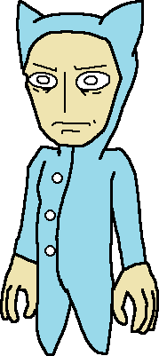
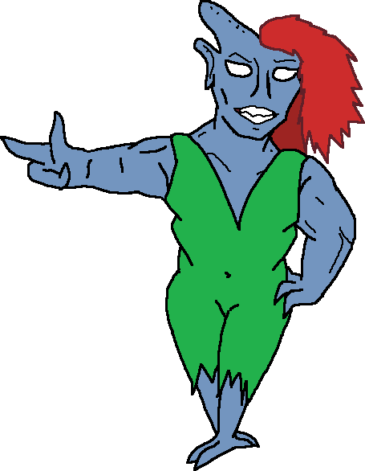
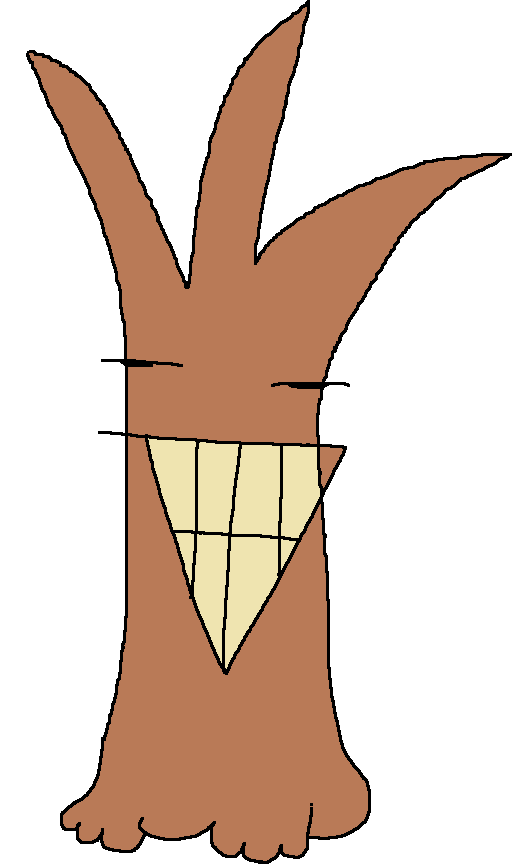
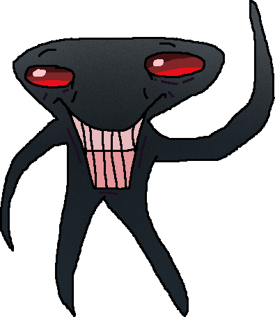
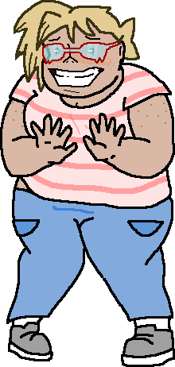
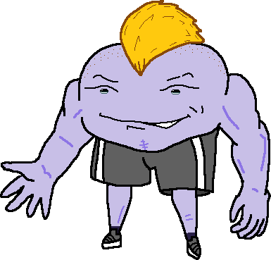
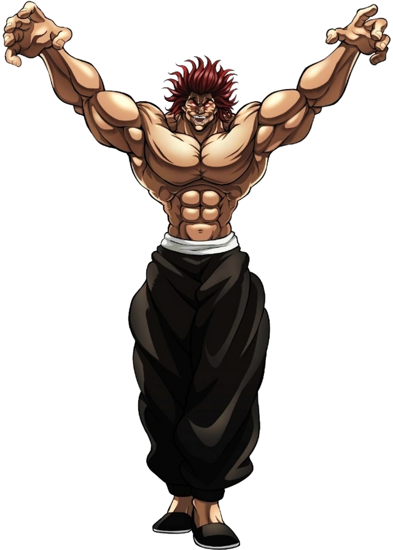

Know more about the characters (more will come in time)
|
 Squablo SquandazBorn from an incestuous farmer family to living in the city as a bum, Squablo Squandaz remains an unsufferable careless ass who'd take the chance to ridicule anyone who approaches him, especially other annoying bums like him, makes him feel self aware of his miserable existence of having no shins, no feet, big hands that can crush melons and the growth spurt of Danny Devito. FUN FACT!Squablos cat pajamas come from his childhood pet who was skinned by his brother as punishment, the blood sticks to him to this day unless waters applied; Then he'd come to F.B for more as he's too used to the clothes. |
|
 F.B (Febrona Belmonte)F.B is Squablos only friend, barely, Grippers punching bag, and a born Siren. He or she or they have a passion of doing whatever the people around them are doing just to fit in and hopefully not have them find out she's a serial 'cannibal', live stock doesn't cut it. She's also horrible at fancy english, why he bothers to speak fancy english is to keep up her facade. FUN FACT!F.B's weird attire is meant to lure in her preys lust to make hunting easier, maybe that's why she can't catch things like cattle to eat. |
|
 Gripper SquandazPart of Squablos thirteen reasons why, Gripper's narcissistic yet wise for his 23 years on earth which can be converted to 23 human years. He does nothing around the house and originally squatted in his house until Squablo gave up and F.B thinking he's cool to be around. Don't ask why he's the only character drawn so poorly. FUN FACT!With no hands, he can instead extend his foots length out in exchange of one his branch hair being pulled in like a whirly tube, also he's 80% tree sap, beat that humans. |
|
 John.The towns best hobo ever, he can change from 4ft to 5, eat anything except Kiwano, and mind-bending magic tricks that can be explained through a scientists asshole! Nobody knows how he got to earth but nobody wants to anyways, he is STUPID! |
|
 Clair AequorClair has a crush on F.B so severe, it makes her nose flow blood like a fountain. She lives alone with her loser brother Clark and dreams of getting into any college. So far it's been one year since graduation had clair been accepted into one, and she is severely low on cash. Overall she's a cheerful yet chill person to be around, that can be turned around if anyone discusses fishing near her, she LOVES fishing and swimming in general. |
|
 John DoeNo introductions needed, he is, if not Americas 333th's most famous test tube baby actor! He's dashing, loving and gave up 40% of his wealth to live among the poor peasants of Golden nugget town! FUN FACT!He's a husband of one child who currently lives with their mother and her boyfriend |
|
 Yujiro HanmaEarths strongest creature and father of Baki and Jack Hanma, Yuujirou works as a highly-paid freelance mercenary and assassin for various governments and organizations. It is unknown how much people or organizations pay him to do his mercenary job, but it is extremely high, judging from his expensive taste. |